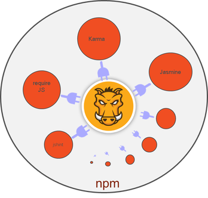

Introduction
Almost all modern web applications are using a data-driven approach with single page navigation or responsive design. JavaScript plays a key role in this approach. The complete web site (static/dynamic) is rendered through JS. Hence we need well defined process to validate the JS files and unit tested.Grunt is task based command line tool for JavaScript. The task can be anything. Usually, front end application development will have below tasks
- Developers create a small chunk of CSS and JS files as per their modules and merge into a single file
- Compile the JS to check the compilation errors and warnings
- Do unit testing
- Optimize the CSS and JS file by removing unnecessary spaces and comments (minification).
Apart from above tasks there might be other tasks based on the nature of the project.
Where to use Grunt
Companies are following continues delivery with go-live when ready. With this approach application will go live for every 2-4 weeks time with a small set of functionalities. Within this short span of time the packing and deployment process will kill some time of developers and tester. Not only time also quality of deliverable.To reduce packing time and increase the quality of delivery, we can go for automation tool. If you think about above four steps, what all we can automate? Yes, whatever your thinking is right.
- We can automate merges of smaller CSS and JS into one file
- Compile JS file
- Execute unit test cases before packing the build
- Optimize the CSS and JS
All above automation can be done with Grunt. Not only above tasks Grunt allows you to customizes how every you want. Refer Grunt page to know about tasks and plug-ins supported by grunt.
How to install Grunt
One step before installation
There are some confusions between grunt-cli and grunt. grunt-cli is used to put the grunt command in system path which you can access from any directory.Another important point is we can have multiple versions of grunt in the same machine based on projects need. grunt-cli is responsible to use the specified version in project grunt file.
Node.js Installation
If you already have Node.js installed in your system ignore this step.Grunt is installed on Node.js package manager (npm). What it means is before using grunt, we need to install stable version of Node.js. Don't worry, you don't need to know about Node.js to use the Grunt but uses Node.js environment to run the Grunt. Use Node.js link to download the npm. You can use Download or Install buttons to download the npm. If you're using 32-bit hardware use download button. You need admin right to install this.
Use npm link to know about npm based tools and frameworks.
grunt-cli installation
Installing grunt-cli is very simple. Once you install Node.js go to OS command prompt and run below command.$ npm install -g grunt-cli
Above command will install the grunt module in the desired location based on npm configuration. This command will work absolutely fine if you're working with personal network or if your company proxy allows to download the grunt-cli through a network. Your company proxy may block due to various reasons like SSL issues or network authentication.
If you want to pass the network authentication to use network, first set the proxy with authentication like below from the command prompt.
$npm config set proxy http://<username>:<password>@<proxyhost>:<port> $npm config set https-proxy http://<username>:<password>@<proxyhost>:<port>If you don't need a user name and password and want to pass only proxy,
$npm config set proxy http://<proxyhost>:<port> $npm config set https-proxy http://<proxyhost>:<port>If above approaches are not working and want to use grunt-cli for development purpose, use below commands
How to use Grunt
As I mentioned above section, we need npm to use the grunt. Based on project nature you can write your own script or can use grunt plug-ins. Most of the project tasks, we can go with grunt plug-ins. Below diagram shows how to use plug-ins.
Use below steps to use the existing plug-in in your project
Project setup to enable grunt is very simple. To enable grunt, create package.json and gruntfile.js in the project root directory.package.json
package.json is a metadata file which is used by npm to understand the project details and dependencies. We can use any text editor to create or edit package.json file. package.json file looks like below
{
"name": "my-first-grunt-project",
"version": "0.1.0",
"devDependencies": {
"grunt": "~0.4.5"
}
}
The name attribute indicate the name of the project. This can be any project name. version attribute indicates
the project version. devDependencies attribute is used to specify the dependencies of your project. In above example,
my-first-grunt-project project is dependent on grunt version 0.4.5.
Once you're done with package.json use below npm command from your project root directory to add the dependencies to your project.
$ npm installThe above command will read package.json and installs all the dependencies as per devDependencies.
There are list of grunt plug-ins available to perform different tasks. You can check the plugin site to know about the grunt plug-ins. If you like to create your own plug-in we can do that. We will discuss the same at further sections.
Let say if you want to use grunt-contrib-uglify plug-in which is used to minify the files using UglifyJs. We can add this dependency in pacakage.json and use npm install command to install. But if you use this it will try to install all the dependencies even it's already installed. Instead, we can use below command to install the latest version of grunt-contrib-uglify module and to add the entry in package.json automatically.
$npm install grunt-contrib-uglify --save-dev
--save-dev parameter is used to store the entry in package.json. After executing the above command if you open the package.json file, it looks like below
{
"name": "my-first-grunt-project",
"version": "0.1.0",
"devDependencies": {
"grunt": "~0.4.5",
"grunt-contrib-uglify": "^0.7.0"
}
}
gruntfile.js
This is a main file to automate the tasks. This file contains a list of tasks and scripts to execute. Basically gruntfile.js is divided into 4 sections- grunt wrapper function
- Configure project and tasks
- Load the tasks or plugins
- Define default tasks
1. Add grunt wrapper function
Create gruntfile.js in the project root directory where package.json is present. Open gruntfile.js in any text editor and add below method.
module.exports = function(grunt) {
};
The above wrapper method should be there in every grunt file and all the grunt code need to write inside this method. This
wrapper function is called by grunt task runner when we run the grunt task file.
2. Configure project and task
In this section we are going to configure the variables and tasks. Project task configuration needs to include below method.
grunt.initConfig({
});
This method should be inside the wrapper method.
module.exports = function(grunt) {
grunt.initConfig({
});
};
Let start with uglify task configuration
grunt.initConfig({
uglify: {
build: {
src: 'main.js',
dest: 'main.min.js'
}
}
});
main.js file a normal JS file and we want to remove all comments, white spaces and line breaks using uglify task.
uglify task contains build sub task which will take the source and destination. ugligy task will remove
spaces, escape characters and comments from the source and generate the destination file.
3. Load the tasks or plugins
The next step is to mention about which all plugins and tasks are used in gurntfile.js. Use grunt.loadNpmTasks() method to load the module. To load grunt-contrib-uglify module, use it like below
module.exports = function(grunt) {
grunt.loadNpmTasks('grunt-contrib-uglify');
}
4. Define default tasks
In this section, we will declare what all are the tasks needs to execute by default when we run the grunt task runner from command prompt. Use grunt.registerTask() method to specify the task names.
module.exports = function(grunt) {
grunt.registerTask('default', ['uglify']);
}
Complete gruntfile.js looks like bellow.
//wrapper method
module.exports = function(grunt) {
//config section
grunt.initConfig({
uglify: {
build: {
src: 'main.js',
dest: 'main.min.js'
}
}
});
//load task or plugin
grunt.loadNpmTasks('grunt-contrib-uglify');
//register tasks
grunt.registerTask('default', ['uglify']);
};
Grunt has API. Refer http://gruntjs.com/api/grunt link to know
more about API.
Run Grunt
Now, it's time to run the grunt. Go to the root directory of your project where gruntfile.js is present and execute below command.$ grunt
After execution of grunt, you will see main.min.js file which is minified version.
Watch your scripts
Grunt supports to watch all your tasks automatically. What we need to do is configure the task names to watch.Go to project root directory where package.json is present and add the plug-in dependency. Use below command to do this.
$npm install grunt-contrib-watch --save-dev
Open gruntfile.js and add watch task
//wrapper method
module.exports = function(grunt) {
//config section
grunt.initConfig({
uglify: {
build: {
src: 'main.js',
dest: 'main.min.js'
}
},
watch: {
scripts: {
files: ['main.js'],
tasks: ['uglify'],
options: {
spawn: false,
}
}
}
});
//load task or plugin
grunt.loadNpmTasks('grunt-contrib-uglify');
grunt.loadNpmTasks('grunt-contrib-watch');
//register tasks
grunt.registerTask('default', ['uglify','watch']);
};
Save the changes and run the grunt command from command line. Now you can see that the watch task keeps on monitoring
the resources that you mentioned in watch task. Open main.js file and modify the file. Watch task automatically uglify the
resource.
References
Documentation - http://gruntjs.com/getting-started
API - http://gruntjs.com/api/grunt
Plugins - http://gruntjs.com/plugins